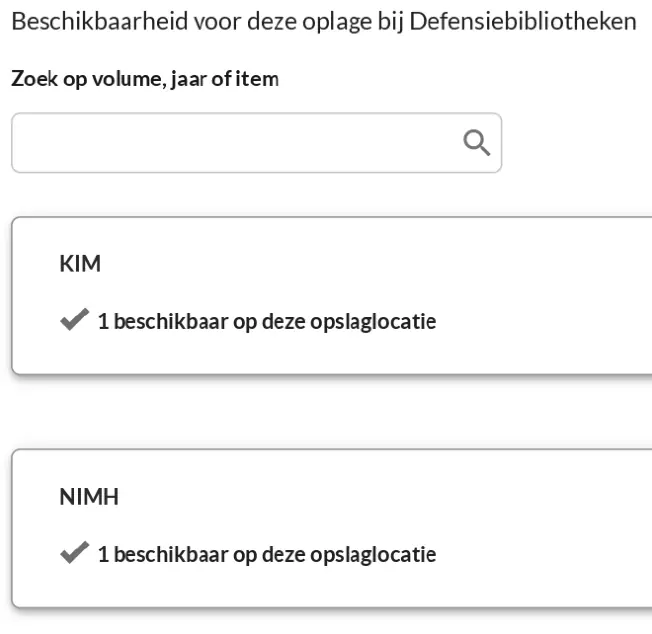

Prueba · Registro de catálogo
Registros de catálogo de las bibliotecas de Defensa, 23 de marzo de 2026
El pasaje
«Disponibilidad de esta tirada en las bibliotecas de Defensa. KIM: 1 disponible en esta ubicación de almacenamiento. NIMH: 1 disponible en esta ubicación de almacenamiento». Página 3, el panel de disponibilidad de la edición de 2014. Traducido del neerlandés; el texto original figura a continuación.
Texto original
“Beschikbaarheid voor deze oplage bij Defensiebibliotheken. KIM: 1 beschikbaar op deze opslaglocatie. NIMH: 1 beschikbaar op deze opslaglocatie.” Cada biblioteca figura en un recuadro propio, con una marca de verificación delante de la línea. El texto anterior une el encabezado y los dos recuadros, y omite el campo de búsqueda situado entre ellos.

Por qué importa este documento
El propio catálogo de bibliotecas del Ministerio de Defensa registra el libro en tres bibliotecas de Defensa: la edición revisada de 2016 en la Real Academia Militar y la primera edición de 2014 en el Instituto Real de la Marina y en el Instituto Neerlandés de Historia Militar. En estos registros se basa la frase del ensayo al respecto.
Procedencia
- Documento
- Dos registros de catálogo en tres páginas, impresos del catálogo de las bibliotecas de Defensa
- Conservado por
- Defensiebibliotheken, las bibliotecas del Ministerio de Defensa, mindef.on.worldcat.org
- Registros de catálogo
- Edición de 2016 en la KMA, signatura KMA 79 N175 G11; edición de 2014 en el KIM, signatura KIM XA 74, y en el NIMH; números OCLC 960019892 (edición de 2016) y 898360755 (edición de 2014)
- Palabras clave
- Nederland, spionage, inlichtingendiensten, MIVD, Srebrenica
- Fecha
- 23 de marzo de 2026
- Idioma
- Neerlandés
- Fuente
- Impresión en PDF en dedoofpotgeneraal.
nl/ doc/ biebs2.pdf
Citado en: el ensayo «La prohibición cayó, el libro quedó en pie» en el capítulo (10) «Grietas en el muro».
Ficha de prueba: https://
Documento: https://
Modificado por última vez el 13 de septiembre de 2026, consultado el 26 de noviembre de 2026.

Esta página es una ficha de prueba del libro El general del encubrimiento de Edwin Giltay y del sitio web que lo acompaña.